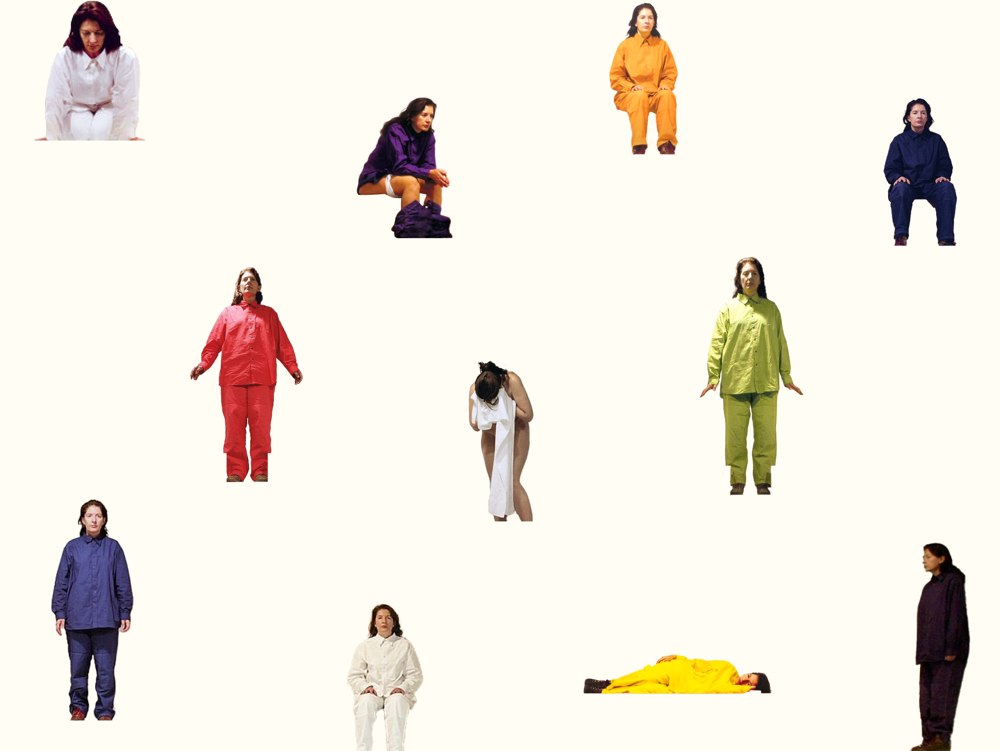

MARINA ABRAMOVIĆ: THE HOUSE WITH THE OCEAN VIEW
I took part in a 3-hour internal design hackathon. The brief: create an attention-grabbing landing page for a virtual event, that clearly highlights the event's value proposition and includes interactive elements that would spark participation.
I designed an immersive version of Marina Abramovic's 'The House with the Ocean View,' letting users explore every angle of the 12-day performance at their own pace.
The microsite uses a full-screen background with subtle hover points that reveal different moments and perspectives. It's a bit like peeking behind the curtain, hinting at the unpredictability of a live performance and giving users a feel for what's coming without giving everything away.
- 2024

Feedback and Takeaways
The feedback highlighted that the concept and interactions were fun, engaging, and matched Marina Abramović's style.However, it wasn't always clear what the exhibition was about for someone unfamiliar with her work. With more time, I would focus on better framing the event upfront and clarifying what visitors can expect.